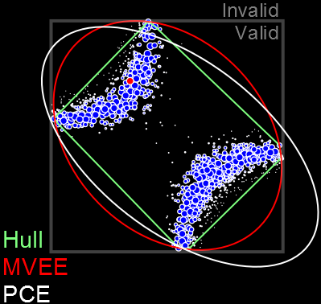
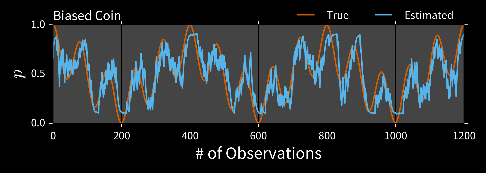
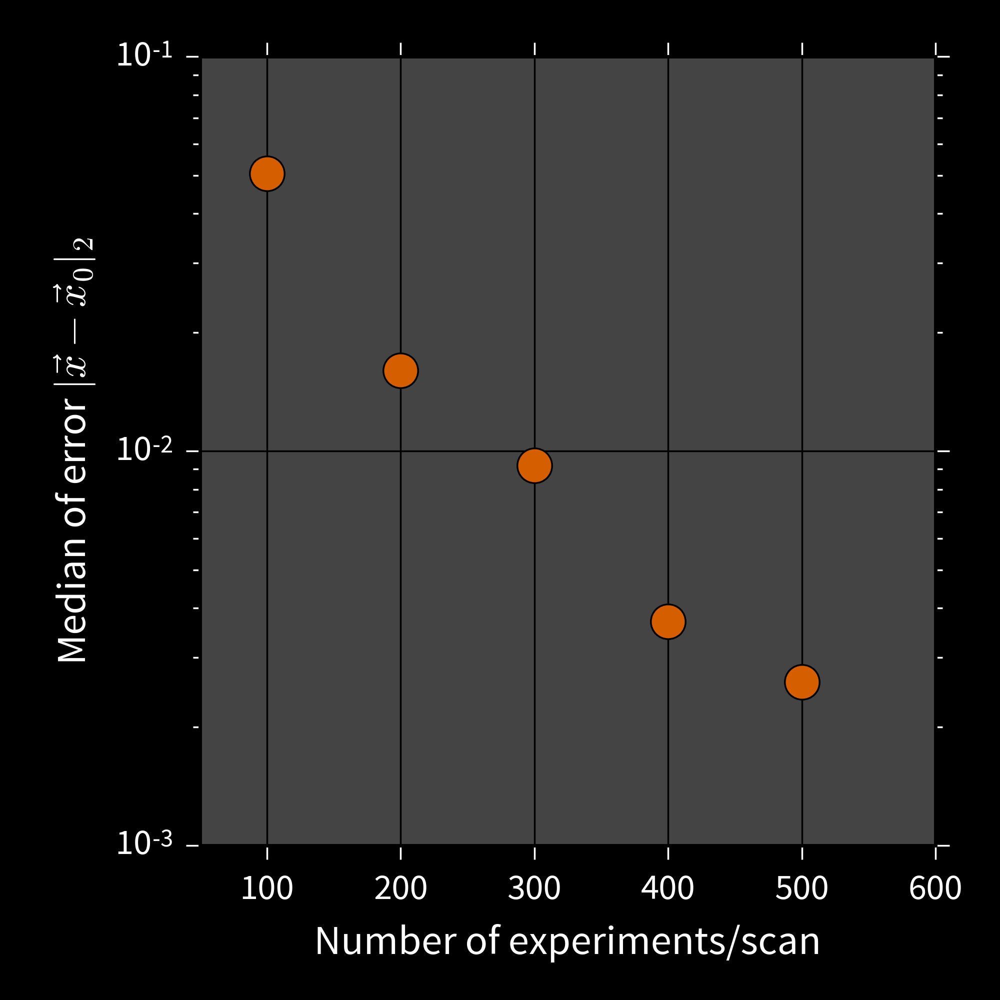

www.cgranade.com/research/talks/qml/2016
•
tutorial
Ferrie, Granade, Cory tfx
Granade et al. s87
Wiebe et al. tf3
Wiebe et al. 7nx
Wiebe et al. tdk
Granade, Combes, Cory bhdw
Wiebe and Granade bk9d
Liu and West 8c2
Doucet et al. bmch
Ferrie and Granade tdj
Granade 10012/9217
figure: Ferrie tb4
Svore et al. 1304.0741
background: neon by Orest Tataryn
background: photo by mattbuck , h/t Wiebe
{kind=link}
Isard and Blake cc76f6
Rejection and Particle Filtering for Hamiltonian Learning
What is a Hamiltonian?
Lots of meanings and applications in condensed matter, quantum info, etc. In this talk, we consider precisely one:
$$ \ket{\psi(t)} = \ee^{\ii H t} \ket{\psi(0)} $$
A Hamiltonian generates dynamics.
Learning Hamiltonians is critical to a range of tasks:
- Metrology
- Learning magnetic fields, etc.
- Calibration
- Static field / pulse power / crosstalk, etc.
- Debugging/Diagnosis
- $T_2$ estimation, other noise finding
- Verification/Validation
- Analog and digital quantum simulation

We want an approach that can work for small and large quantum devices alike.
Punchline: our algorithm can characterize 50-qubit devices.
\begin{align} H & = \sum_{i = 1}^{50} \sum_{j = 1}^{50} \omega_{ij} \sigma_z^{(i)} \sigma_z^{(j)}, \\ \omega_{i,j} & \sim \operatorname{Uniform}\left(0, 10^{-2 (|i - j| - 1)}\right). \end{align}
To get there, we consider several different approaches to parameter estimation.
Aside: Why Bayesian?
Frequentist methods work. Bayesian methods also work.
Methodology should follow the question of interest.
Example
What should I believe the properties of my system are, given my experience and a set of observations?
Bayesian question, hence Bayesian answer.
Inference as an Iterative Algorithm
Input: Prior $\Pr(\vec{x})$, data set $D$, likelihood $\Pr(d | \vec{x}; e)$
- $p(\vec{x}) \gets \Pr(\vec{x})$
- For each datum $d \in D$ and experiment $e$:
-
Update based on $d$:
$p(\vec{x}) \gets \Pr(d | \vec{x}; e) p(\vec{x}) / \Pr(d)$.
-
Update based on $d$:
- Return $\hat{x} = \int \vec{x}\,p(\vec{x})\,\dd\vec{x}$.
**Problem**: may be intractable to analytically compute $$ \hat{x} \defeq \int \Pr(\vec{x} | d; e) \dd\vec{x} = \int \frac{ \Pr(d | \vec{x}; e) }{ \int \Pr(d | \vec{x}; e) \Pr(\vec{x}) \dd\vec{x} } \Pr(\vec{x}) \dd\vec{x}. $$
Rejection Sampling Isn't Enough
Let $D = {d_1, \dots, d_k}$ be a set of data.
$$ \Pr(\text{accept} | \vec{x}) = \Pr(D | \vec{x}) = \prod_{d \in D} \Pr(d | \vec{x}) \overset{k \to \infty}{\longrightarrow} 0. $$
Example: Biased Coin $x = (p)$
$\Pr(H | p) = p$, $d \in \{H, T\}$.
$p \approx 0.5 \Longrightarrow \Pr(d_1, \dots, d_k | p) \approx 1 / 2^k$.
We will accept exponentially few samples!
Can compute $\bar{x}$, $\Sigma$ from one sample at a time by accumulating
$$ x_{\Sigma} = \sum x \text{ and } x^2_{\Sigma} = \sum x^2. $$
\begin{align} \bar{x} & = x_{\Sigma} / n_{\text{accept}} \\ \Sigma & = x^2_{\Sigma} / n_{\text{accept}} - \bar{x}^2. \end{align}
Welford's algorithm: numerically-stable modification.
Rejection Filtering (RejF)
Input: Prior mean $\bar{x}$, prior covariance $\Sigma$, number of samples $m$ to accept.
- For each datum $d$ and experiment $e$:
- $n, \bar{x}', M_2 \gets 0$ Initialize Welford.
- While $n < m$:
- Draw $\vec{x} \sim \mathcal{N}(\bar{x}, \Sigma)$. Sample f/ prior.
- Accept $\vec{x}$ w/ $\Pr(d | \vec{x}; e)$.
- If accepted, update $n$, $\bar{x}'$, $M_2$.
- $\bar{x} \gets \bar{x}'$, $\Sigma \gets M_2 / (n - 1)$. Est. moments.
Easy to implement and embed in control hardware.
Example: Phase Estimation, $x = (\phi)$
Prepare state $\ket{\phi}$ s. t. $U\ket{\phi} = \ee^{\ii \phi}\ket{\phi}$, measure to learn $\phi$.

$\Pr(1 | \phi; M, \theta) = \cos^2(M [\phi - \theta])$
Applications
- Interferometry / metrology Higgins et al. crwd6w
- Gate calibration / robust PE Kimmel et al. bmrg
- Quantum simulation and chemistry Reiher et al. 1605.03590
Example: Phase Estimation, $x = (\phi)$

**Drawback**: RejF requires posterior after each datum to be $\approx$ Gaussian.
We can solve this by using a more general approach: - Weaken Gaussian assumption. - Generalize the rejection sampling step.
Liu-West Resampler
If we remember each sample $\vec{x}$, we can use them to relax RejF assumptions.
Input: $a, h \in [0, 1]$ s.t. $a^2 + h^2 = 1$, distribution $p(\vec{x})$.
- Approximate $\bar{x} \gets \expect[\vec{x}]$, $\Sigma \gets \operatorname{Cov}(\vec{x})$
- Draw parent $\vec{x}$ from $p(\vec{x})$.
- Draw $\vec{\epsilon} \sim \mathcal{N}(0, \Sigma)$.
- Return new sample $\vec{x}' \gets a \vec{x} + (1 - a) \bar{x} + h \vec{\epsilon}$.
Particles can represent distributions using either
weights or
positions.

Particle Filter
- Draw $N$ initial samples $\vec{x}_i$ from the prior $\Pr(\vec{x})$ w/ uniform weights.
- Instead of rej. sampling, update weights by \begin{align} \tilde{w}_i & = w_i \times \Pr(d | \vec{x}_i; e) \end{align}
- Renormalize. \begin{align} w_i & \mapsto \tilde{w}_i / \sum_i \tilde{w}_i \end{align}
- Periodically use Liu-West to draw new $\{\vec{x}_i\}$ with uniform weights. Store posterior in positions.
Useful for Hamiltonian models...
...as well as other QIP tasks.
- Tomography
Huszár and Holsby
s86
Struchalin et al. bmg5
Ferrie 7nt
Granade et al. bhdw, 1605.05039 - Randomized benchmarking Granade et al. zmz
- Continuous measurement Chase and Geremia chk4q7
- Interferometry/metrology Granade 10012/9217
Estimation in Practice
We need a bit more to make particle filtering a practical solution.
- Error bars How well do we know $\vec{x}$?
- Time-dependence $\vec{x} = \vec{x}(t)$
- Software impl. Off-the-shelf.
Dealing with each in turn...
Error Bars
Particle filters report credible regions $X_\alpha$ s.t. $$ \Pr(\vec{x} \in X_\alpha | d; e) \ge \alpha. $$
E.g.: Posterior covariance ellipse, convex hull, MVEE.
Time-Dependence
In addition to updating particle weights, move each particle stochastically:
$$ \vec{x}(t_{k+1}) = \vec{x}(t_k) + \vec{\eta},\qquad \vec{\eta} \sim \mathcal{N}(0, (t_{k+1} - t_k) \Sigma) $$
Installation
$ pip install qinfer
Updater Loop
>>> updater = SMCUpdater(model, n_particles, prior)
>>> heuristic = heuristic_class(updater)
>>> for idx in range(n_measurements):
... experiment = heuristic()
... datum = model.simulate_experiment(
... true_model, experiment
... )
... updater.update(datum, experiment)
>>> est = updater.est_mean()
SMCUpdater formalizes particle filtering
as an iterative algorithm.
QInfer Example: RB, $\vec{x} = (p, A, B)$
Setup
>>> import numpy as np
>>> import qinfer as qi
Simplified Estimation
>>> data = np.column_stack([
... counts, seq_lengths, n_shots * np.ones_like(counts)
... ])
>>> mean, cov = qi.simple_est_rb(
... data, n_particles=12000, p_min=0.8
... )
QInfer Example: RB, $\vec{x} = (p, A, B)$
Can also customize model, prior, and updater loop.
Model
>>> model = qi.BinomialModel(
... qi.RandomizedBenchmarkingModel()
... )
Prior
>>> prior = qi.PostselectedDistribution(
... qi.ProductDistribution(
... # Use the same prior over $p$.
... qi.UniformDistribution([0.8, 1]),
... # Tight prior over $A,\,B$.
... qi.MultivariateNormalDistribution(
... np.array([0.498, 0.499]),
... np.diag([0.004, 0.002]) ** 2
... )
... ), model)
Updater Loop
QInfer: Assessing Performance
- Risk: average error given $\color{white}{\vec{x}}$
- Bayes risk: average error over $\color{white}{\vec{x}}$
- Exact $\hat{x}$ optimal for Bayes risk / squared error.
- Difficult to prove; can find numerically.
Performance Testing
>>> perf = perf_test_multiple(
... n_trials=50, n_exp=50, n_particles=1000,
... model=SimplePrecessionModel(),
... prior=UniformDistribution([0, 1]),
... heuristic_class=ExpSparseHeuristic
... )
Bigger and Better
We've seen that filtering is useful for estimating small quantum models. Now let's push on to bigger systems.
What challenges do we face for large systems?
Simulation Costs
\begin{align} \tilde{w}_i & = w_i \times \color{red}{\Pr(d | \vec{x}_i; e)} \\ w_i & \mapsto \tilde{w}_i / \sum_i \tilde{w}_i \end{align}
Example: Ising on Complete Graph
Quantum Bootstrapping
One important approximation f/ physical insight:
information locality.
Allows using small trusted device to learn large Hamiltonians.

Approximation quality can be bounded if Lieb-Robinson velocity is finite.
Scan trusted device across untrusted.

Run particle filter only on supported parameters.
50 qubit Ising chain, 8 qubit simulator, 4 qubit observable
Filtering
- Practical solution for current experimental tasks.
- Enables learning large Hamiltonians using quantum resources.
- Physical insight gives new statistical algorithm for even larger systems.
Going Further
- Hyperparameterization Granade et al. s87
-
$\Pr(d | y) = \expect_x[\Pr(d | x) \Pr(x | y)]$.
Allows composing w/ noise, inhomogeneity, etc. - Model selection Ferrie 7nt
- Using acceptance ratio or normalizations enables comparing models.
- Quantum filtering Wiebe and Granade 1512.03145
- Rejection filtering is a dequantization of quantum filtering using Harrow et al. bcz3hc.
Thank you!
Welford's Algorithm
Can compute $\bar{x}$, $\Sigma$ from one sample at a time. Numerically stable.
- $n, \bar{x}, M_2 \gets 0$.
- For each sample $x$:
- $n \gets n + 1$ Record # of samples
- $\Delta \gets x - \mu$ Diff to running mean
- $\bar{x} \gets \bar{x} + \Delta / n$ Update running mean
- $M_2 \gets M_2 + \Delta (x - \bar{x})$ Update running var
- Return mean $\bar{x}$, variance $M_2 / (n - 1)$.
Vector case is similar.
We design experiments using the
PGH: Particle Guess Heuristic
- Draw $\vec{x}_-, \vec{x}_-'$ from current posterior.
- Let $t = 1 / |\vec{x}_- - \vec{x}_-'|$.
- Return $e = (\vec{x}_-, t)$.
Adaptively chooses experiments such that
$t |\vec{x}_- - \vec{x}_-'| \approx\,$ constant.